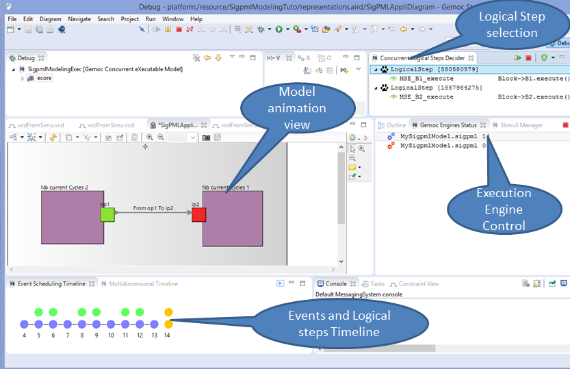

Table of Contents
SigPML is a Domain Specific Modeling Language dedicated to data flow processing. The concrete syntax is based on blocks, ports and connectors which associated ports to create directed flows. The DSML execution semantics defines that all the blocks of a model run concurrently regarding constraints on connector synchronization. The tutorial includes two execution semantics with the first one which defines a synchronization of the block execution with the pop and push actions of the connectors. The second one introduces read and write operations in the block semantics to decouple the connector acces.
The final result of the SigPML model execution is showed on the next picture with a purple processing block which is an executing block and the brown block waits for a connector synchronization after its connector acces.

This language is based on the Ecore metamodel presented in the next figure.

A SigPML Application is a set of Blocks and a set of Connectors which in relation with the blocks through input and output ports. The Connector concept owns the capacity attribute which defines the maximum number of access on the connector, and the currentSize attribute provides the current acces number on the connector. The Port contains the rate attribute which defines the possible access number input and output ports.
The graphical concrete syntax is defined with the Sirius component. We provide a Sirius project as a zip file. You can also make your own Sirius project and use the online Sirius tutorial and the online Sirius Documentation.
With the provided project, the final result of the modeling tool is showed in the next figure.
SigPML final animation modeling tool. 
First, start by creating a new xDSML project (New > Project > GEMOC Project / new xDSML Project), with your desired name, for instance "org.gemoc.sample.xsigpml". In the created project, we can open the project.xdsml file. The xDSML view summarizes all the important resources used in an xDSML project (which are part of and managed by other projects). This view is the top level definition of a xDSML to have an access to any other projects include in the definition of our xDSML.
A xDSML project definition includes the Domain model definition of our DSML as a classical ecore model, the concrete syntax definition and the behavior definition. The concrete syntax can be textual (based on xtext project) or graphical (Sirius project). The graphical animation viewpoint is an extension of the graphical textaul syntax (Sirius project). The behavior definition is based on an aspect definition of the DSML domain model for the Domain Specific Action (DSA) as a Kermeta3 project ; and the MoCC defines the concurent semantics of the DSML as a MoCCML project and finaly the definition of the mapping between the DSA and MoCC definitions as the Domain Specific Event (DSE) with a ECL project.
Each of these definitions are based on existing and dedicated projects.
xDSML wizard definition. 
You can select an existing domain model to reference the Ecore model as the DSML abstract syntax. You must specify the root element of you domain model.

Or you can create an Ecore project with the provided Ecore file.
You can select an existing graphical editor model to reference the Sirius project as the graphical syntax of your DSML.
Sirius Graphical model selection. 
Or you can create a Sirius project with the provided The odesign file.
The execution semantics of the DSML must define that all the model blocks run concurrently. The block execution is constrained by the access on the connectors associated with the the block through input and output ports. So an execute function of the blocks is synchronized on the connector functions, pop (from the connector connected through the input port on the block) and push (from the connector connected through the output port on the block). A connector has a capacity defining the maximum number of available operations (pop and push). Virtually, pop reads data from the connector and push writes data in the connector. The rate to read and write in the connector is defined as an attribute of the ports.
So we must define: - the Execution Data (ED) and Execution Function (EF) into the DSA definition - the MoCC with a MoCCML model - the mapping between the MoCC and the DSA (ED and EF)
The DSA definition includes two steps : - adding Execution Data and Execution Function in the Ecore model. - creating aspects to weave with the Ecore model in Kermeta3
So first, Execution Data and Execution Function definitions are added to the domain model of SigPMLTuto ecore file. We extend the SigPML metamodel by adding one function execute() in the Block class and the functions push() and pop() in Connector class. These functions are added with the Ecore reflexive editor.
Execution Function in the SigPML metamodel. 
The creation of the DSA project is New→Other→Kermeta3→K3 project→give the name→next→select "Create a plugin using one the templates"→choose "User Ecore Basic Aspects"→fill in allthe requested names and select the Ecore domain model.
The resulted DSA project is a k3dsa project with a sigpmlAspects.xtend file in the package org.gemoc.sample.xsigpml.k3dsa. This file contains the aspects that we want to add to the necessary classes in our case Block and Connector.

In this tutorial, the implementation of the functions is simple. The execute function increments the currentExecCycle of a block until its value is inferior to the cycles value.
The source code is available through Kermeta 3 aspects,tabsize=4 and showed below
package org.gemoc.sample.xsigpml.k3dsa
import fr.inria.diverse.k3.al.annotationprocessor.Aspect
import sigpml.Application
import sigpml.Block
import sigpml.Port
import sigpml.InputPort
import sigpml.OutputPort
import sigpml.Connector
import sigpml.NamedElement
@Aspect(className=Application)
class ApplicationAspect extends org.gemoc.sample.xsigpml.k3dsa.NamedElementAspect {
}
@Aspect(className=Block)
class BlockAspect extends org.gemoc.sample.xsigpml.k3dsa.NamedElementAspect {
public int currentExecCycle = 0
def public void execute() {
if ( _self.currentExecCycle < _self.cycles )
_self.currentExecCycle = _self.currentExecCycle + 1
else
_self.currentExecCycle = 0
println(_self.name + "\n execute (" + _self.currentExecCycle + ")" )
}
}
@Aspect(className=Connector)
class ConnectorAspect extends org.gemoc.sample.xsigpml.k3dsa.NamedElementAspect {
def public void push() {
println( " Push on : " + _self.name + "\n ")
}
def public void pop() {
println( " Pop on : " + _self.name + "\n ")
}
}
@Aspect(className=NamedElement)
abstract class NamedElementAspect {
}The DSE definition is related to declare the Domain Specific Events which define the event interface of our language.
The two next sections ECL and MoCC definitions are tightly coupled. So you can create the two projects and iterate between the two projects in progress.
From the xDSML project, we select the associated wizard of the DSE definition that helps to create an ECL project (Event Constraint Language). After you give a name on your project→next→(you must have a reference on your Ecore domain file)→finish
ECL project creation. 
An ECL program defines the mapping between the domain model, including ED and EF, and the MoCC definition of the next section. In this program, you declare the metaclasses that you want to select ED or EF, and associating them with a MoCC definition.
A metaclass is referenced as Context and in this scope we define an event relative to the EF and also invariants that must be satisfied in the context of the metaclasse.
In this tutorial, two contexts are declared for the metaclasses Block and Connector. In the context of Block an event execute is defined relative to the execution function of the same name in the Block metaclasse. In the context of Connector, an invariant is declared based on the call of a relation declaration. The arguments of this relation are associated to the attributes of the metaclasses Connector and also we can access by navigation expression to the others Ports (for the rate attribute) and Block (for the execute EF).
This relation is defined in the MoCCML program of the next section.
The source code is available through the ECL program and showed below
import 'platform:/resource/org.gemoc.sigpmldomain/model/sigpmldomain.ecore' --import './sigpmldomain.ecore' ECLimport "platform:/resource/org.gemoc.sample.xSigpml.mocc/mocc/xSigpml.moccml" --ECLimport "./xSigpml.moccml" ECLimport "platform:/plugin/fr.inria.aoste.timesquare.ccslkernel.model/ccsllibrary/kernel.ccslLib" ECLimport "platform:/plugin/fr.inria.aoste.timesquare.ccslkernel.model/ccsllibrary/CCSL.ccslLib" package sigpml context Block def : execute : Event = self.execute() context Connector inv ConnectorComputing: let capacity : Integer = self.oclAsType(Connector).capacity in let inRate : Integer = self.itsInputPort.oclAsType(Port).rate in let outRate : Integer = self.itsOutputPort.oclAsType(Port).rate in let currentSize : Integer = self.oclAsType(Connector).currentSize in Relation ConnectorSDF_PAM ( self.itsOutputPort.oclAsType(OutputPort).owner.oclAsType(Block).execute, self.itsInputPort.oclAsType(InputPort).owner.oclAsType(Block).execute, capacity, inRate, outRate, currentSize ) endpackage
From the xDSML project, we select the associated wizard of the MoCC definition that helps to create the moCCML project. Fill the name of the project→next→fill the name of the file→finish
MoCCML project creation. 
In the resulting project, we have a directory mocc with the MoCCML file.
In the MoCCML program, we define the constraint relation referenced in the ECL program (in our case, the ConnectorSDF_PAM relation). This relation is based on an automaton definition.
This automaton describes how the events and variables are used to define a constraint automaton relative to each instance of the Connector class.
The source code is available through the MoCCML program and showed below
AutomataConstraintLibrary xSigpmlMocc{
import "platform:/plugin/fr.inria.aoste.timesquare.ccslkernel.model/ccsllibrary/kernel.ccslLib" as kernel;
import "platform:/plugin/fr.inria.aoste.timesquare.ccslkernel.model/ccsllibrary/CCSL.ccslLib" as ccsl;
RelationLibrary BlockFlowRelationDefLib {
AutomataRelationDefinition ConnectorSDF_PAM_Def [ ConnectorSDF_PAM ] {
variables {
Integer capacity=0
Integer size=0
Integer un=1
Integer deux = 2
Integer inRate=0
Integer outRate=0
}
init: CES0
from CES0 to CES1 : CES0ToCES1
->(
do size = Connector_currentSize.value
do capacity = Connector_capacity.value
do inRate = Connector_inRate.value
do outRate = Connector_outRate.value
)
from CES1 to CES1 : PUSHCES1ToCES1
-> (
when ConnectorSDF_PAM_pop if( size >= inRate ) do size = ( size - inRate )
)
from CES1 to CES1 : POPCES1ToCES11
-> (
when ConnectorSDF_PAM_push if( (size + outRate ) <= capacity ) do size = ( size + outRate )
)
State CES0
(
out : CES0ToCES1
)
State CES1
( in : CES0ToCES1, PUSHCES1ToCES1, POPCES1ToCES11
out : POPCES1ToCES11, PUSHCES1ToCES1
)
}
RelationDeclaration ConnectorSDF_PAM(
ConnectorSDF_PAM_push:clock,
ConnectorSDF_PAM_pop:clock,
Connector_capacity:int,
Connector_inRate:int,
Connector_outRate:int,
Connector_currentSize:int
)
}
}At the end of this step the SigPML language is completely in terms of the metamodel, the graphical syntax, the behavior code of the functions, the expression of the concurrent semantics and the mapping them.
The last step is to define the animation view of the models as a debug extension of the graphical syntax.
As the section dedicated to the graphical syntax, the animator is defined as a Sirius viewpoint based on the odesign file
In this file, we define the viewpoint as an extension of the odesign file of the graphical syntax and modify the graphical shape of the blocks when the currentExecCycle variable is incremented. The expression [ self.eGet('currentExecCycle') > 0 /] is declared to customize the graphical shape of the blocks.
We create an animation project through the xDSML definition.
Animation project creation. 
We select the Add a debug layer to an existing diagram description→next→select the SigPMLAppliDiagram→next→select the name of the Debug layer→finish. We can replace the odesign file by the provided one.
For now the language is totatly defined and executable, so we can used the SigPML Language !!
From the language workbench, the Sigpml modeling workbench can be used to create a model and execute it.
To launch the modeling workbench dedicated to the Sigpml language, we create an eclipse apllication configuration to run the gemocstudio associated with the xDSML definition. The current parameters are set conforming to the parameters of the next picture.
Modeling Workbench launching. 
To obtain modeling workbench adequate performances, we set the VM parameters in the Arguments tab to
-Xmx3000m -Xms3000m
First you create a sigpml model or you can install the given model in an eclipse project The modeling project.
To execute a model, we create a debug configuration and set the parameters conforming to the picture The debug launching configuration.
The debug launching configuration. 
In this configuration, we select the step by step execution with user selection for the next logical step.
When the model is executing, the overview of the modeling workbench is presented in the next picture.
The executed Sigpml model. 
The views are extended with the VCD view which presents all the clocks define in the MoccML model with a tick clock during the logical steps.
The Sigpml model with a VCD view.
The sigpml model is edited in the model editor and we can select model elements and change the model element properties.
The Sigpml model element properties. 
To start the execution of the model, we select a logical step to execute the model in the Concurrent Logical Steps Decider in the upper right window. The logical step contains the event MSE\_B1\_execute so to select this event the Mocml model activates the execute function of the Block B1. So the animation view of the model is updated due to the expression defines in the animation viewpoint.
Start the Sigpml model. 
After, we select again the logical steps to execute and the model progesses and the exection trace is visualized in the timeline view.
.The Sigpml model trace timeline

We can select a logical step from the past in the timeline, to retstart the execution from this logical step.
In this case, a branch appears in the timeline view and we continue the logical step selection.
.Timeline branches after backwards

To stop the animation, we select the red button in the Gemoc engines status view or in the Concurrent Logical Steps Decider.